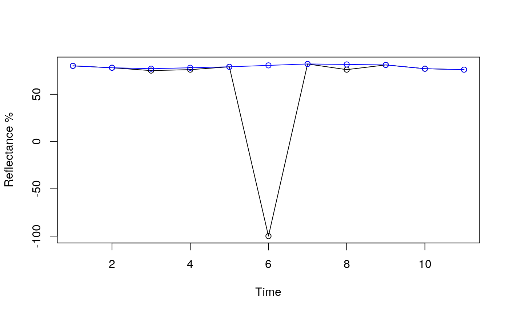

smootH-ftb.RdIn order to eliminate outliers in the time series, Hamunyela et al. (2013) smoothing is used (see References).
smootH(x, interp = "na.interp", CLUSTER = NULL, ...) # S3 method for numeric smootH(x, interp = "na.interp", ...) # S3 method for matrix smootH(x, interp = "na.interp", CLUSTER = NULL, ...) # S3 method for RasterStack smootH(x, interp = "na.interp", CLUSTER = NULL, ...) # S3 method for RasterBrick smootH(x, interp = "na.interp", CLUSTER = NULL, ...) # S3 method for stars smootH(x, interp = "na.interp", CLUSTER = NULL, ...)
| x | object of class numeric, matrix, RasterStack, RasterBrick or stars |
|---|---|
| interp | Four interpolation methods are presented, "na.interp", "na.StructTS", "na.approx" and "na.spline". By default is the method "na.interp". |
| CLUSTER | cluster to use for parallel apply; see makeCluster |
| ... | ignored |
Hamunyela, E., Verbesselt, J., Roerink, G., & Herold, M. (2013). Trends in spring phenology of western European deciduous forests. Remote Sensing,5(12), 6159-6179.
Tarazona, Y., Mantas, V.M., Pereira, A.J.S.C. (2018). Improving tropical deforestation detection through using photosynthetic vegetation time series – (PVts). Ecological Indicators, 94, 367 379.
#> #>#> #> #>x <- c(80,78,75,76,79,-100,82,76,81,77,76) smth <- smootH(x) plot(x, type="o", ylab="Reflectance %", xlab="Time")